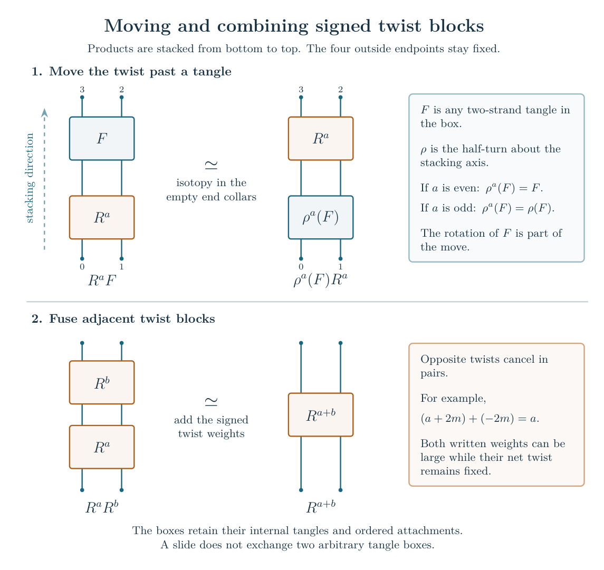
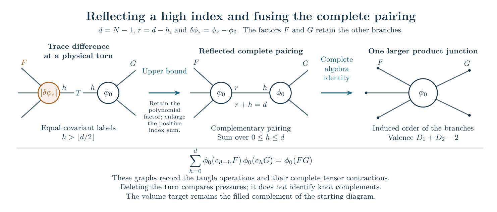
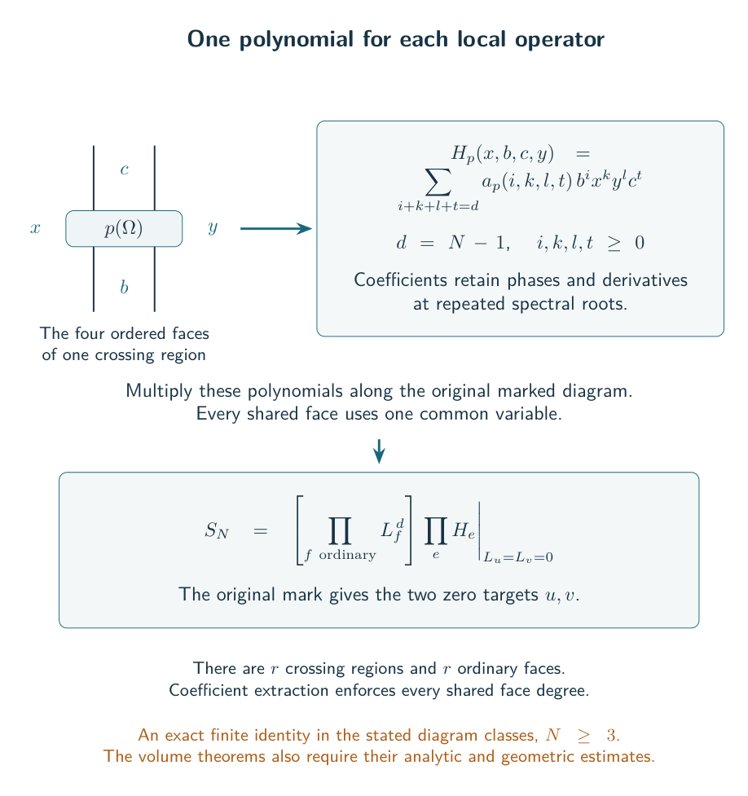
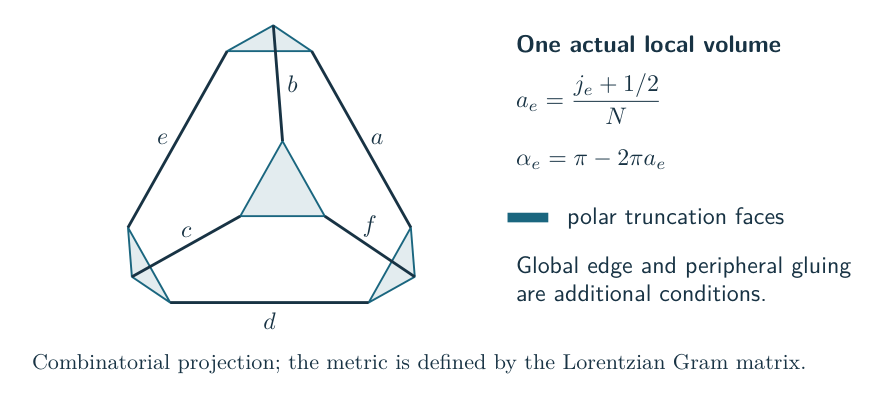
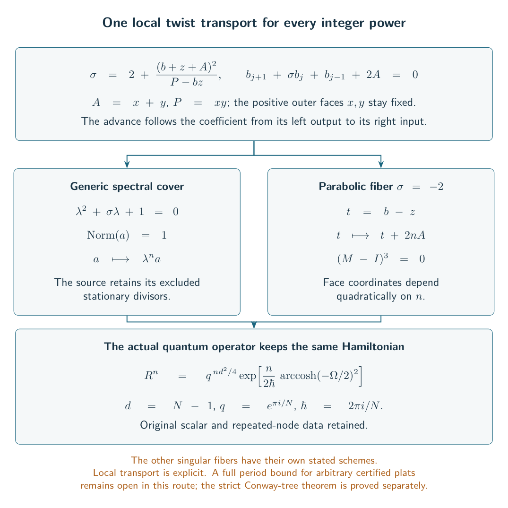
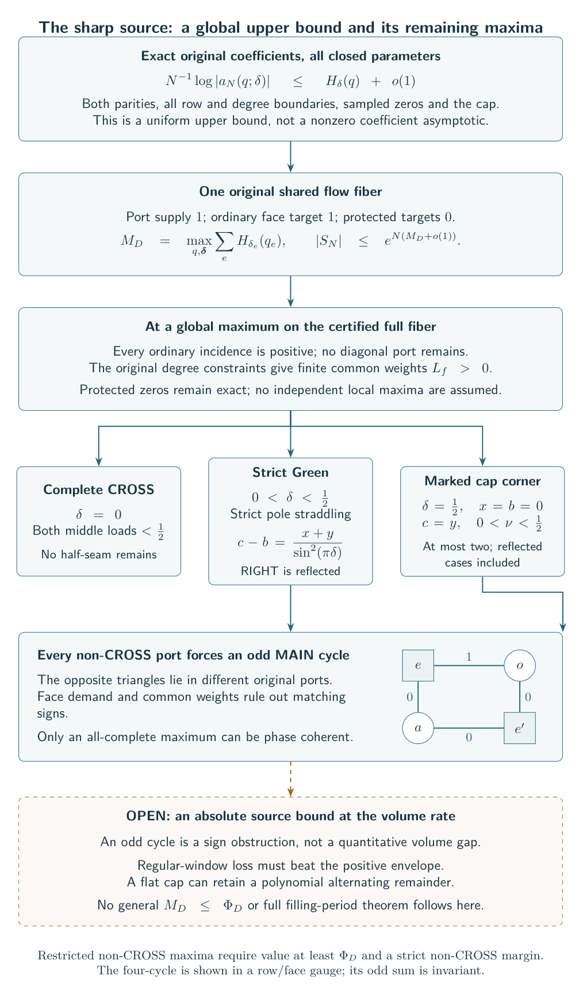
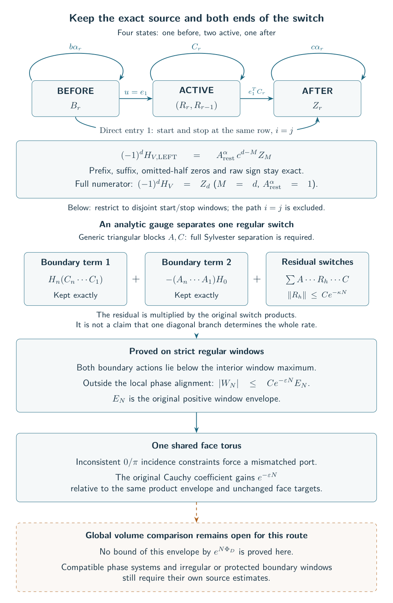
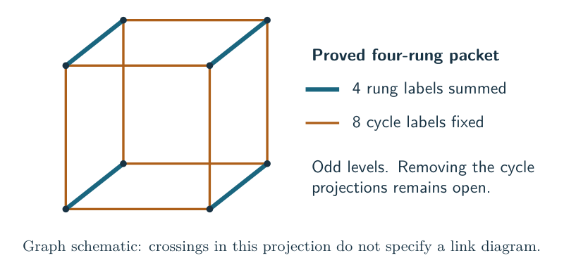

Research library
Choose a question, then follow its current paper and supporting notes. Each route states its scope. Superseded material is kept in Git history.
Volume limits for knots built from tangles

Volume limits for ordered tangle trees, decorated planar diagrams, and unchanged matched spheres satisfying an explicit packing condition. Each construction keeps its own hypotheses.
All diagrams and twist powers are fixed before the level grows. The recursive, quantitative tree, decorated planar, and weak-balance theorems prove the full invariant limit for their stated knots. A finite-cover criterion additionally requires strict witnesses; it is not an assertion that every diagram passes.
The strict Conway volume theorem →Supporting arguments (25)
- Volume limits from the degree and twist at each circle
- Recovering the knot volume from a pointed quantum A-operator
- An endpoint-conditioned energy for the original shared source
- Exact spectral coefficient energy at a protected outer face
- When one shared positive Cauchy torus loses exponential accuracy
- Independent tangle depth at every initial bridge gap
- Arbitrary-depth marked unit-chain extensions of balanced plats
- Quantitative loss on a fixed boundary face of the complete angle flow
- Full original long filling from anchored shared-radius certificates
- Long-filling volume for one-end-layer plats at every bridge width
- Long-filling volume for reduced-layer plats of unbounded bridge number
- An elementary balance certificate for one zero middle
- An exact bridge-number certificate for odd-prime-divisible plat boxes
- The entire original all-CROSS Fourier period from its local packet and global spectral gap
- Volume equality for the original signed augmented source
- The original localized spectral period has a nonzero unit-charge filling contribution
- The full even Fejér endpoint source has the actual complete volume
- Maximal volume fixes the actual marked endpoint configuration
- The one-sided full-numerator remainder on actual spectral polydisks
- Whole original mixed-source volume in the untwisted corridor
- Volume equality for the original untwisted augmented source
- Coverage of the untwisted augmented-source volume theorem
- The source point is the Casson--Rivin maximum for the actual filling
- Independently long fillings of signed octahedral belt stacks
- Long filling across a finite-order zero of the original source amplitude
Varying the knot meridian

Finite tangle operations, source estimates and meridian profiles in their specified long-filling classes.
The source theorems retain their strict construction and long-filling hypotheses. Preferred-longitude identification and conditional recurrence-symbol consequences use the separate geometric and expansion papers.
Moving-meridian source estimates →Supporting arguments (2)
Calculating the finite quantum evaluation

Exact finite crossing data, repeated-root derivatives and the original coherent contraction. Research notes on other source coordinates are distinguished from the proved filling estimates.
The paper proves its finite norm and diagram identities under their stated hypotheses. Local or formal identities in the related research notes are not general asymptotic theorems.
Finite spectral evaluation and filling bounds →Supporting arguments (101)
- Volume limits from the degree and twist at each circle
- A global closed-domain coefficient majorant from the original full tail
- Finite shared multipliers and the stationary branches after full-fiber activation
- Every positive-value non-CROSS sharp maximum has an elementary odd MAIN cycle
- Mixed whole-CROSS and regular-window phase losses
- Fractional odd-cycle packing for the original regular-window source
- Regular-window phase exclusion with one protected outer face
- Regular stop-window exclusion with a protected input middle
- A positive two-state transfer for the actual spectral tail
- Exact original before, active and after transfer
- Exponential suppression of an analytic discrete switch
- Phase exclusion for an original regular spectral window
- An endpoint-conditioned energy for the original shared source
- Exact spectral coefficient energy at a protected outer face
- When one shared positive Cauchy torus loses exponential accuracy
- Independent tangle depth at every initial bridge gap
- Arbitrary-depth marked unit-chain extensions of balanced plats
- Quantitative loss on a fixed boundary face of the complete angle flow
- Full original long filling from anchored shared-radius certificates
- Long-filling volume for one-end-layer plats at every bridge width
- Long-filling volume for reduced-layer plats of unbounded bridge number
- An elementary balance certificate for one zero middle
- An exact bridge-number certificate for odd-prime-divisible plat boxes
- The entire original all-CROSS Fourier period from its local packet and global spectral gap
- The global LEFT weighted spectral envelope
- A global spectral bound for an actual diagonal source sector
- Whole-domain large Fourier charges: exact paired currents and a vanishing-rate operator tail
- The original localized spectral period has a nonzero unit-charge filling contribution
- Which derivatives the current direct-power route actually requires
- The full even Fejér endpoint source has the actual complete volume
- Maximal volume fixes the actual marked endpoint configuration
- The one-sided full-numerator remainder on actual spectral polydisks
- Odd spectral regularization has the same full shared entropy
- Continuous full-kernel entropy and exact identity reduction of maxima
- Diagonal Fejer ports reduce to a true identity smoothing
- Hybrid Fejer flow: all proper tight sets come from permitted digon cuts
- Non-diagonal maximizers have no free zero degrees
- Actual representation and signed volume from hybrid tight-cut pieces
- Exact serial Fejer coupons have only a polynomial composition cost
- The actual Fejér source: a general shared entropy theorem
- The actual Fejér half block: uniform coefficient entropy
- The even Fejér source: complete crossing paths and a forest remainder
- The original Gaussian resolvent has a positive numerator and a controlled closing cap
- An exact spectral total derivative for the original root source
- Direct crossing powers and a limitation of phase-blind spectral bounds
- The positive Newton capacity can exceed the complete rate
- Connected untwisted smoothing has a strict source-capacity gap
- An exponentially accurate analytic interpolation of the actual fold factors
- The actual complete circle as a positive face polynomial
- The positive face coefficient has one global saddle
- A common positive face radius gives the global channel maximum
- The original marked boundary source and its transverse stationary point
- The original boundary source has exactly two flat face directions
- Actual complementary heads and the outgoing large-clock packet
- Actual prefix signs at the right-angled framing boundary
- The actual finite-clock boundary determinant through the fold
- A common head chart for the original charged Ward currents
- Moving-period factorial normals along logarithmically escaping heads
- The original q-Hahn source at a resonant framing boundary
- The actual generic white numerator at the resonant hard edge
- The actual braided residual-framing current
- The actual marked framing density from Casimir-source Ward currents
- A braided second-cut co-source with its actual pivotal weights
- The complete source has a nonzero local marked density and folded Gaussian
- The adjoint finite-jet connection on the original source cycle
- Exact transport of quantum derivatives in a tensor contraction
- A specified generic exceptional-operator lift at nonreal deficient degree
- The actual degree cycle across the finite-head wall
- The exact factorial interpolant with a moving quantum period
- The original exceptional operator as a continuant period
- The actual geometric target channel and its finite Casimir polynomial
- The original cross-central Green kernel has a selected spectral action
- The source-normalized Racah polynomial has all its zeros above two
- Polynomial control through the target spectral endpoint two
- Exact polynomial action away from a physical endpoint
- A positive Fourier partition with the original shared constraints
- The radial positive Fourier comparison does not supply a common geometric frame
- The actual magnetic-energy profile and the full Steinberg cost
- Exact coefficient duality for the original complete-channel polynomial
- The actual matching source as shared cycle Fourier periods
- The full real native cost throughout every shrinking fold window
- Native magnetic energy controls every completed projector jet
- The matching-edge target gauge and its completed projector pairs
- Every fixed generic jet of an actual physical q-Hahn column
- The actual joint magnetic and pair-degree amplitude
- The original matching-edge block, its row measure, and its boundary cost
- A positive tail-free Racah scalar at one actual matching edge
- The actual paired normal on a fixed complex corridor near the fold
- A polynomial bound for the actual partner normal on the physical grid
- Polynomial cost of the actual small-channel generic normals
- The actual partner normal is transverse to a generic collision
- An exact accretive determinant for the joint magnetic source
- Negative roots of the actual complete-channel source polynomial
- The actual q-Hahn column selects a complex leading action
- A uniform nonzero complex amplitude for the actual q-Hahn column
- The actual magnetic polynomial and its complex corridor
- An exact phase compiler for arbitrary fixed augmented plats
- Every actual auxiliary color in the arbitrary-plat source compiler
- Full first-normal bounds for all supported Racah partners
- A generic all-port single Racah kernel with actual Clebsch normalization
- The full original augmented-plat source on its matching graph
Angle optimization and actual geometry

See how angle actions become cell volumes, how ordered gluing faces match, and how the original peripheral curves determine the filled knot complement.
Local cells, complete complements, and marked fillings
Circle patterns and primitive geometric fillings →Supporting arguments (32)
- Long-filling volume for one-end-layer plats at every bridge width
- Long-filling volume for reduced-layer plats of unbounded bridge number
- An elementary balance certificate for one zero middle
- An exact bridge-number certificate for odd-prime-divisible plat boxes
- Actual representation and signed volume from hybrid tight-cut pieces
- The global signed cut-ball regulator, with the original marked apex
- Connected untwisted smoothing has a strict source-capacity gap
- A uniform representation-volume gap for fixed peripheral words
- Smoothed source capacity, simple blocks and their actual polyhedra
- A fixed-radius smoothing bound and its explicit limitation
- The complete Fourier core and the actual marked geometric deformation
- A finite angle-flow certificate for matching-edge smoothing
- The actual augmented-plat endpoint action has its diagram regulator
- The original boundary source has exactly two flat face directions
- Actual prefix signs at the right-angled framing boundary
- The original q-Hahn source at a resonant framing boundary
- The actual marked framing density from Casimir-source Ward currents
- The complete source has a nonzero local marked density and folded Gaussian
- The marked crossing-circle rectangle has ratio at most one
- The selected scalar polynomial generates the actual recoupled transport
- The radial positive Fourier comparison does not supply a common geometric frame
- The native highest-weight energy has a geometric action
- Selected physical factors outside one exact matching-edge block
- The right-angled cut obstructs an all-central selected frame
- A finite criterion for a physical magnetic framing
- A finite certificate for the selected geometric principal phase
- A regular magnetic chart for the complete geometric plat character
- The endpoint channel Hessian is the inverse primitive cusp shape
- The actual Casimir plat phase and its marked representation germ
- Fixed-skeleton long fillings: the proved geometric quantifiers
- The saturated four-port factorial action is a hyperideal tetrahedron volume
- The actual graph complement from one rectified core and octahedra
Peripheral data, quantum operators and torsors

The conditional classical-symbol theorem and the retained proposals for source, boundary and regulator coordinates.
The paper assumes a specified annihilating operator and the required source expansions. The research torsor constructions do not supply a general noncancellation theorem.
Meridian expansions and selected classical symbols →Supporting arguments (26)
- The boundary term and repeated monodromy sector of the Mellin equation
- Zeros of the ADO meridian state approach the complete point
- Recovering the knot volume from a pointed quantum A-operator
- Which derivatives the current direct-power route actually requires
- The original crossing torus transports the actual meridians
- The actual face factor on a fixed real fold interval
- The retained Newton sign and the actual local peripheral branch
- The complete Fourier core and the actual marked geometric deformation
- The original complete core has a finite coupled face-coefficient system
- A common head chart for the original charged Ward currents
- The actual generic white numerator at the resonant hard edge
- The actual marked framing density from Casimir-source Ward currents
- A braided second-cut co-source with its actual pivotal weights
- The adjoint finite-jet connection on the original source cycle
- Exact transport of quantum derivatives in a tensor contraction
- The exact factorial interpolant with a moving quantum period
- The selected scalar polynomial generates the actual recoupled transport
- The actual geometric target channel and its finite Casimir polynomial
- The source-normalized Racah polynomial has all its zeros above two
- The original exceptional operator as a continuant period
- A finite certificate for the selected geometric principal phase
- The actual local source phase generates ordered character transport
- The actual augmented-plat endpoint action has its diagram regulator
- A rational Bloch regulator for every positive-source volume maximum
- A-polynomials, selected periods and the volume problem
- An intrinsic norm torsor from the quantum A-module
The sharp source and its stationary maxima

A global upper problem with original face targets, an explicit seam gap, and finite stationary classification. The whole seam period is negligible for long fillings; macroscopic noncentral cancellation remains open.
Proved source, seam-period and stationary reductions; macroscopic noncentral comparison open
Every original coefficient on the full closed spectral domain →Supporting arguments (5)
- Sharp CROSS-degree domination and a uniform original seam gap
- Boundary reduction for a global full sharp-source maximum
- Finite shared multipliers and the stationary branches after full-fiber activation
- Every positive-value non-CROSS sharp maximum has an elementary odd MAIN cycle
- A flat cap has no uniform local exponential angular mismatch bound
Fourier, weighted Cauchy, and energy

Follow the whole original CROSS period, coefficient-energy criteria, and mixed supported-window phase bounds with weighted cycle losses. The remaining general volume comparison is kept separate.
Whole-period theorems in stated classes; local phase gaps and conditional general bounds
Whole oscillatory filling sums →Supporting arguments (44)
- Mixed whole-CROSS and regular-window phase losses
- Fractional odd-cycle packing for the original regular-window source
- Regular-window phase exclusion with one protected outer face
- Regular stop-window exclusion with a protected input middle
- Phase exclusion for an original regular spectral window
- Exponential suppression of an analytic discrete switch
- Exact original before, active and after transfer
- A positive two-state transfer for the actual spectral tail
- An endpoint-conditioned energy for the original shared source
- Exact spectral coefficient energy at a protected outer face
- Long-filling volume for one-end-layer plats at every bridge width
- Long-filling volume for reduced-layer plats of unbounded bridge number
- An elementary balance certificate for one zero middle
- An exact bridge-number certificate for odd-prime-divisible plat boxes
- The global LEFT weighted spectral envelope
- A global spectral bound for an actual diagonal source sector
- Whole-domain large Fourier charges: exact paired currents and a vanishing-rate operator tail
- The original localized spectral period has a nonzero unit-charge filling contribution
- Which derivatives the current direct-power route actually requires
- Odd spectral regularization has the same full shared entropy
- The full even Fejér endpoint source has the actual complete volume
- Maximal volume fixes the actual marked endpoint configuration
- The one-sided full-numerator remainder on actual spectral polydisks
- An exact spectral total derivative for the original root source
- The complete Fourier core and the actual marked geometric deformation
- The original shared Fourier source has an explicit centered quadratic phase
- The physical selected Fourier action has a global Legendre chart
- The selected Fourier action has a nonsingular holomorphic Legendre chart
- A positive Fourier partition with the original shared constraints
- The radial positive Fourier comparison does not supply a common geometric frame
- The actual magnetic-energy profile and the full Steinberg cost
- The native highest-weight energy has a geometric action
- Exact coefficient duality for the original complete-channel polynomial
- The actual matching source as shared cycle Fourier periods
- The full real native cost throughout every shrinking fold window
- Native magnetic energy controls every completed projector jet
- The matching-edge target gauge and its completed projector pairs
- The original matching-edge block, its row measure, and its boundary cost
- An exact analytic function of the auxiliary colors
- What a Tauberian argument would need from the original positive Fourier energy
- A uniform bound for one cap in its moment norm
- Bounding a signed cap contribution by two derivatives of its pressure
- A stable exterior controls the whole protected spectral interval
- A boundary-response criterion for a protected source term
Cube experiments and general sewing

A test of correlated boundary labels and a shared geometric core. The retained positive cube sectors have narrower conclusions than a full knot-invariant theorem.
Projected volume results; full cube asymptotic open
The four-rung cube packet →Supporting arguments (3)
Short fillings and the finite-exception problem

The proposed extension after fixing arbitrary short partial fillings, and the orthogonal variational formulation of the original source.
The finite-exception theorem remains open. The fixed-degree minimum and exact elimination preserve the original scalar and normalization, but do not yet establish its hyperbolic lower rate.
Current finite-exception status →Supporting arguments (12)
- From long fillings to finitely many exceptions
- What the short-filling results imply about finite exceptions
- A strongly convex minimum for the complete Conway source
- Orthogonal elimination of the linear Conway packet variables
- Orthogonal boundary packets under Conway composition
- A tame Hermite frame for the original source channel
- Complete ordinary-cap trees have one positive angle-simplex energy
- Auditing the ordinary-color remainder in the original Fourier energy
- Hardy norms of the cyclic dilogarithm and its finite coefficients
- The original cyclic dilogarithm near the unit circle
- A-polynomials, selected periods and the volume problem
- Research methods and their present roles
All retained notes
The technical-note index contains the current supporting arguments and open research. A note’s check script and recorded output are linked beside its source when a matching pair exists.